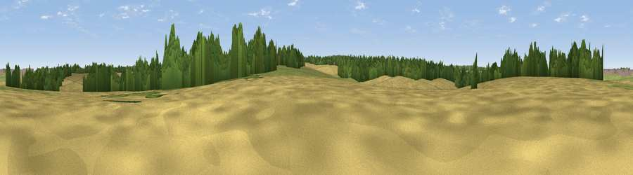

Viewpoint near Long Sutton
#44495 in England · top 80% of its area beats it · near Long SuttonThe view, rendered

A 360° render of this exact spot computed from the terrain model, tree cover and land cover — summer colours, afternoon light, calibrated against photographs of famous viewpoints. Real trees, hedges and buildings will differ in detail.
The panorama
Grey silhouette: terrain skyline in each direction (720 bearings, Earth curvature and refraction included). Dashed green: skyline with trees (+15 m) and buildings (+8 m) as obstacles. Blue strip: how far the ground is visible on each bearing.
Where the view opens
Wedge length = distance to the farthest visible ground on that bearing (vegetation-aware). Rings at 10, 25 and 50 km.
What fills the view
55% cropland · 24% woodland · 18% grassland · 2% built-up
Angular shares of the visible panorama (visual magnitude), not map area. Landscape diversity 0.46 (0–1 Shannon).
Key numbers
More beautiful places nearby
The staircase of upgrades: each row has a higher view potential than everything closer. Driving times are estimates from straight-line distance, calibrated against real road routing — check an actual route before setting out.
| Place | Direction | Drive | Score |
|---|---|---|---|
| Viewpoint near Long Sutton | S · 1 km | ~3 min | 28.4 |
| Viewpoint near Odiham | NNE · 2 km | ~5 min | 32.5 |
| Crest Hill | SE · 3 km | ~7 min | 46.2 |
| Horsedown Common | E · 3 km | ~7 min | 59.0 |
| Noar Hill | S · 16 km | ~28 min | 62.3 |
| Gibbet Hill | SE · 20 km | ~34 min | 64.9 |
| Viewpoint near Steep | S · 20 km | ~34 min | 68.7 |
| Viewpoint near Haslemere | SE · 25 km | ~41 min | 68.9 |
51.22193, -0.94780 · source: osm peak · position refined by local search. Computed location — check access rights before visiting.